Role
Graphic designer
Client
Klein Media
Tools
Figma
Type
Internship project
A complete brand manual for an organic growth agency: logo, colour, type, icons and the shard in use.
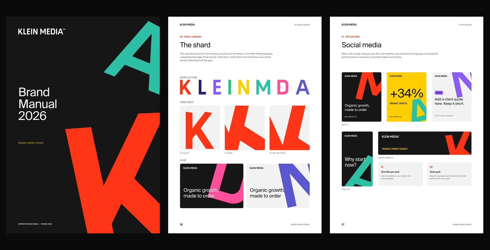
Graphic designer
Klein Media
Figma
Internship project
Klein Media needed a fresh manual for its 2026 identity. It had to be something the team could pick up and apply correctly, from a logo on a wall to a post in a feed.
I structured the book in chapters on logotype, typography, colour, icons, visual language and applications. Blood Orange and Almost Black carry the layout, and every service gets its own accent colour, icon set and letter shard. Each rule is shown on a real example, so people can copy a page instead of reading about it. I also built a graphics library with the icons, shards and logos in every brand colour.
Suisse Int’l for headlines, Kumbh Sans for body text and Staatliches as the display accent.
Blood Orange, Almost Black and Total White for the layout, plus six service colours as accents.
Pieces of the logo letters, cropped by the edge of the format, give every layout its energy.
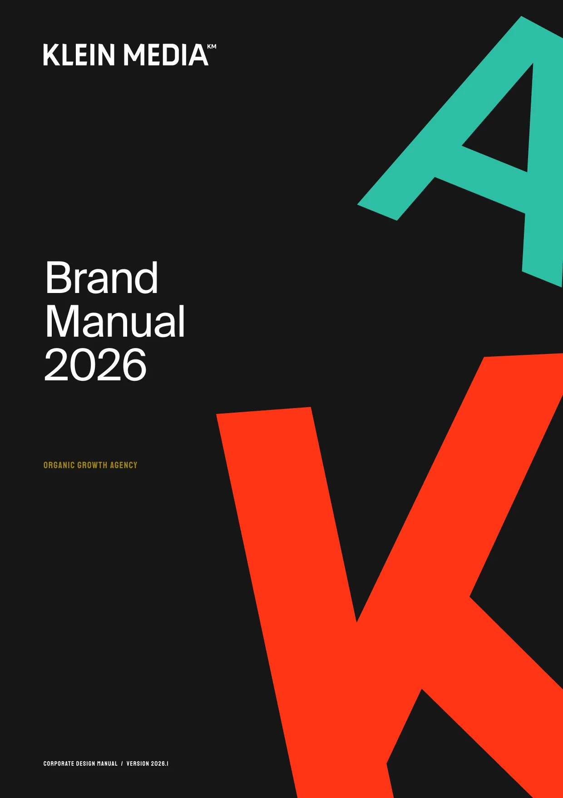
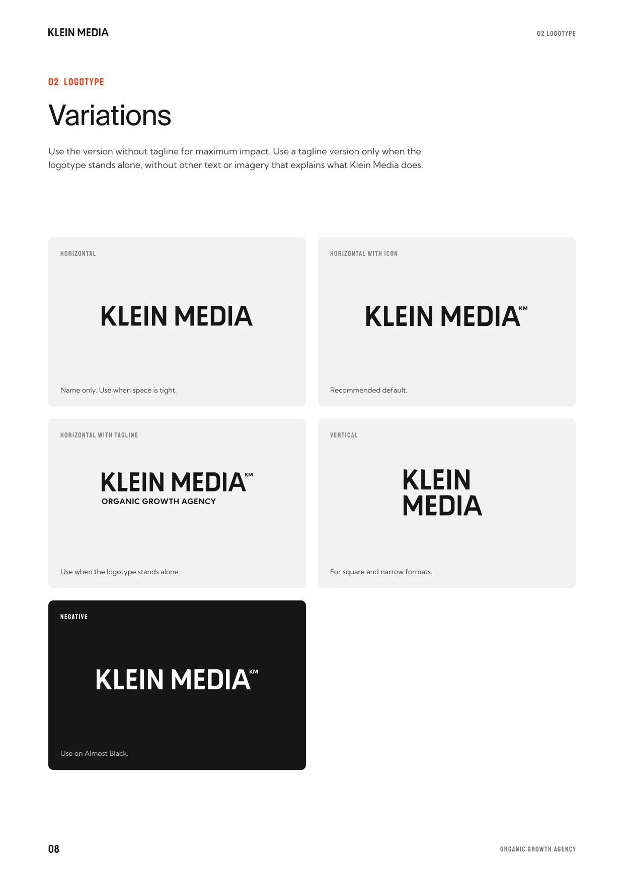
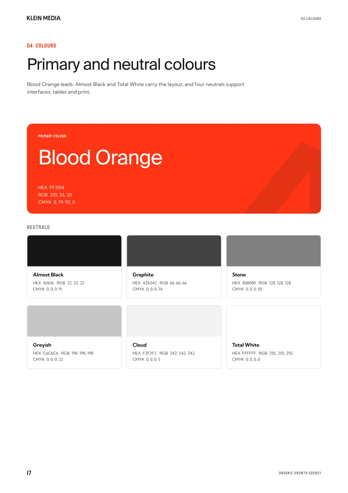
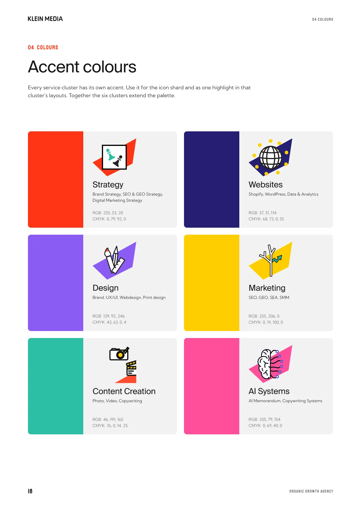
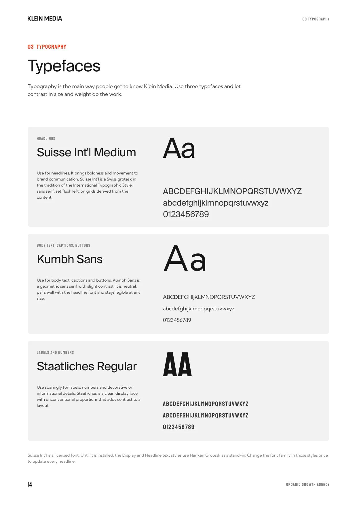
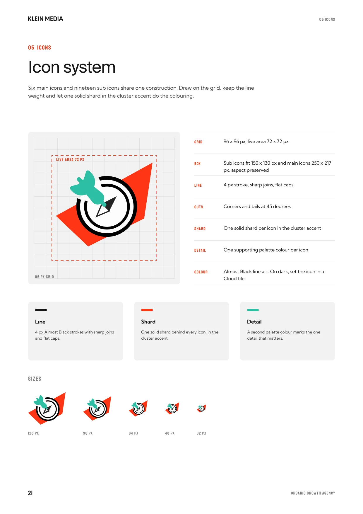
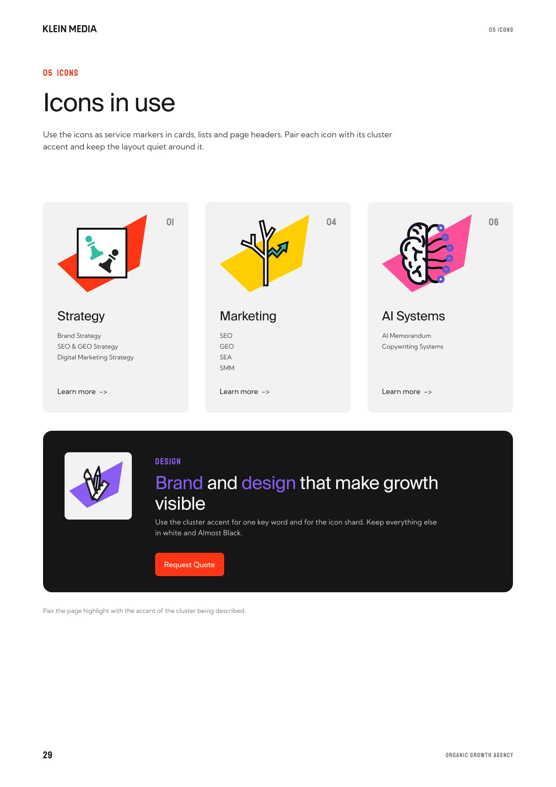
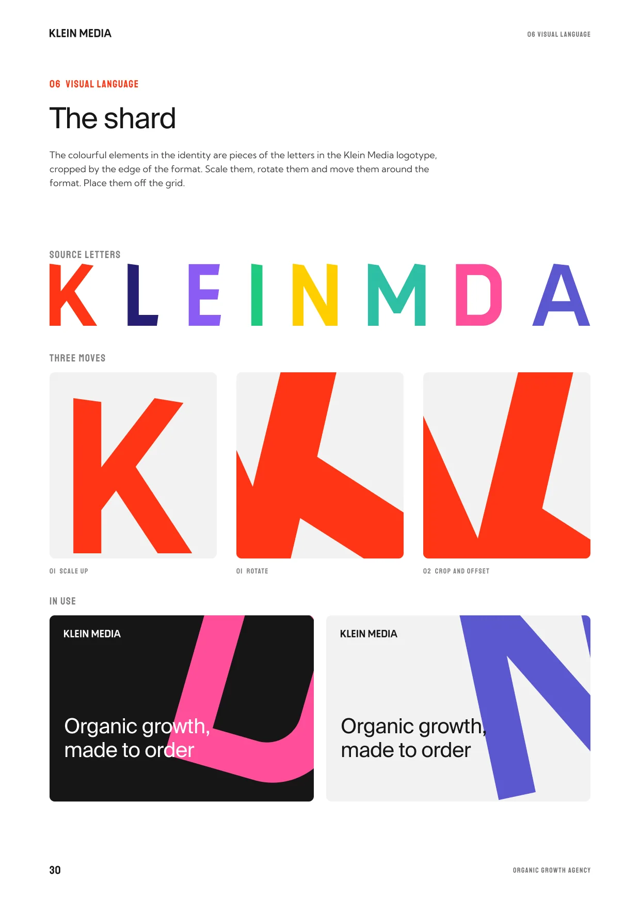
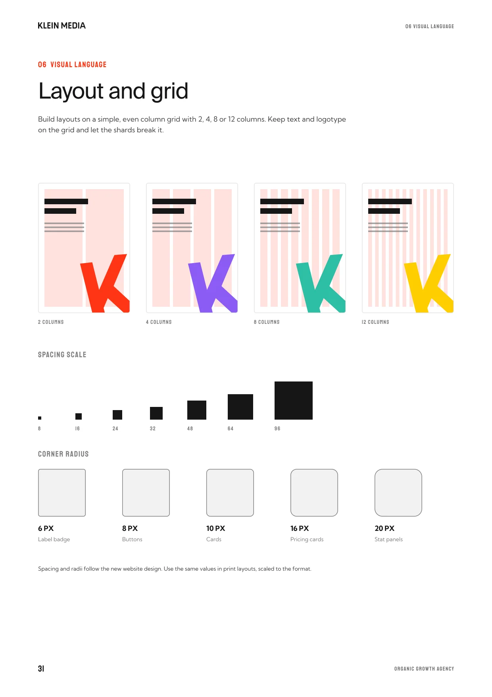
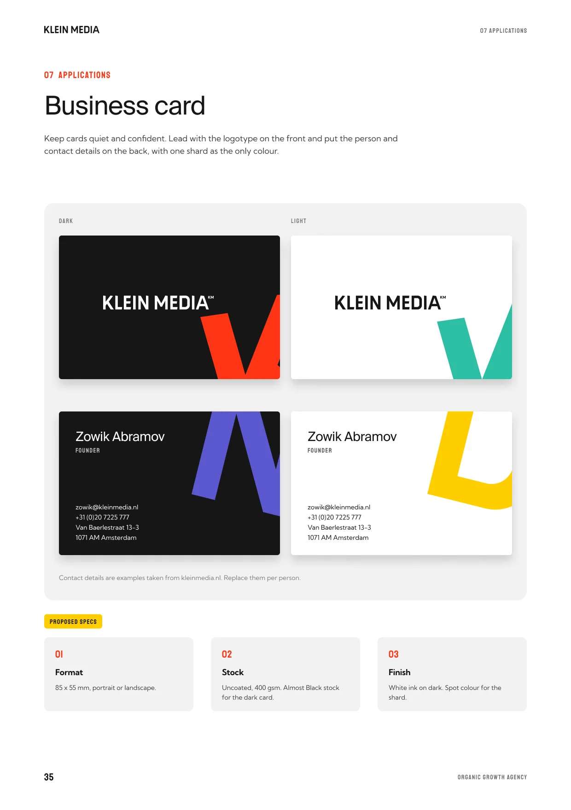
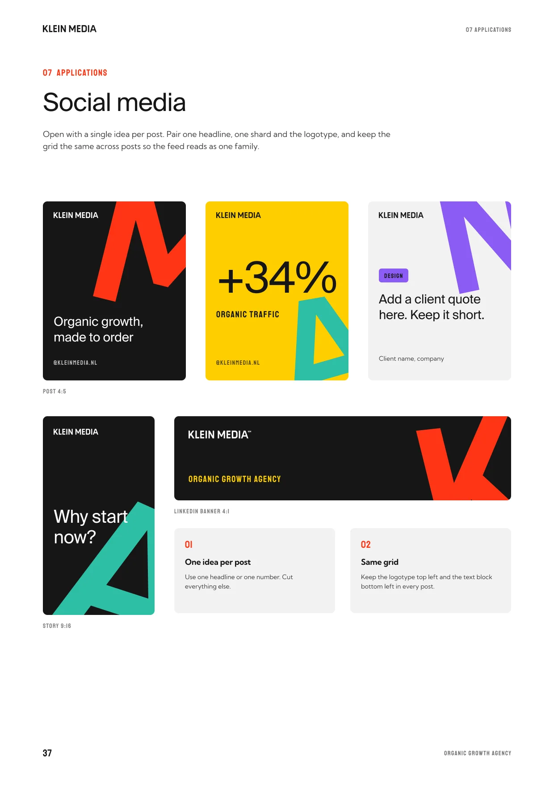
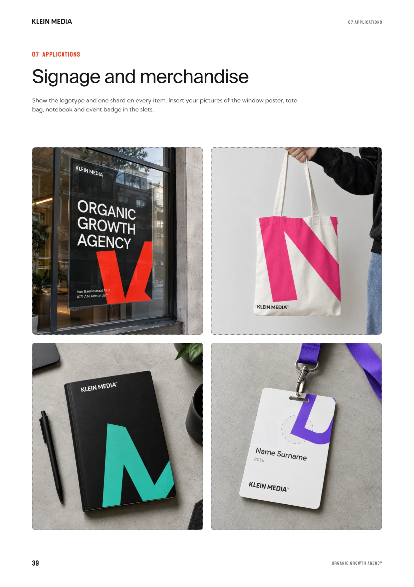
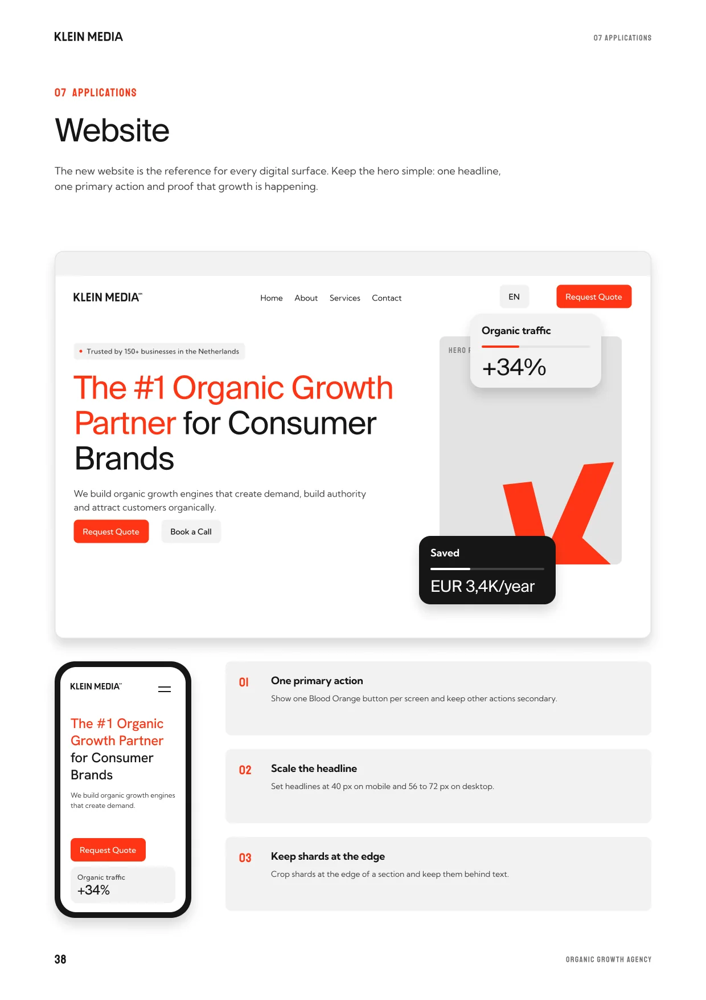